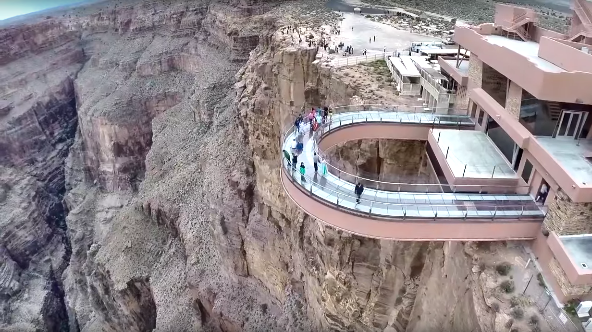
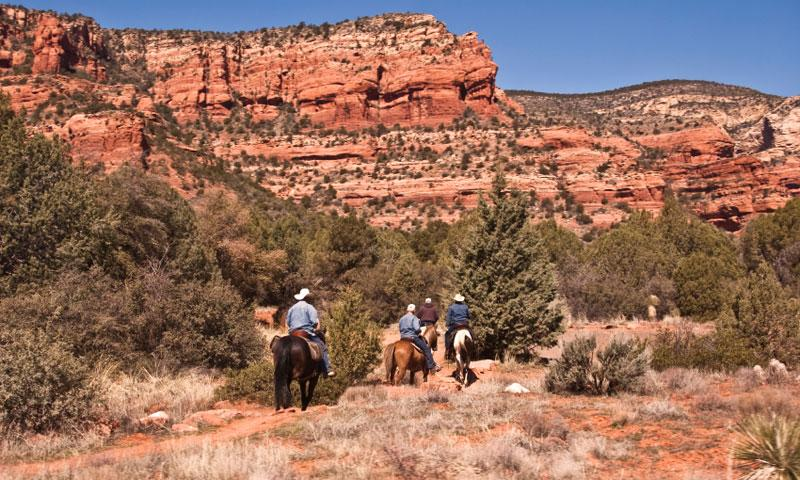
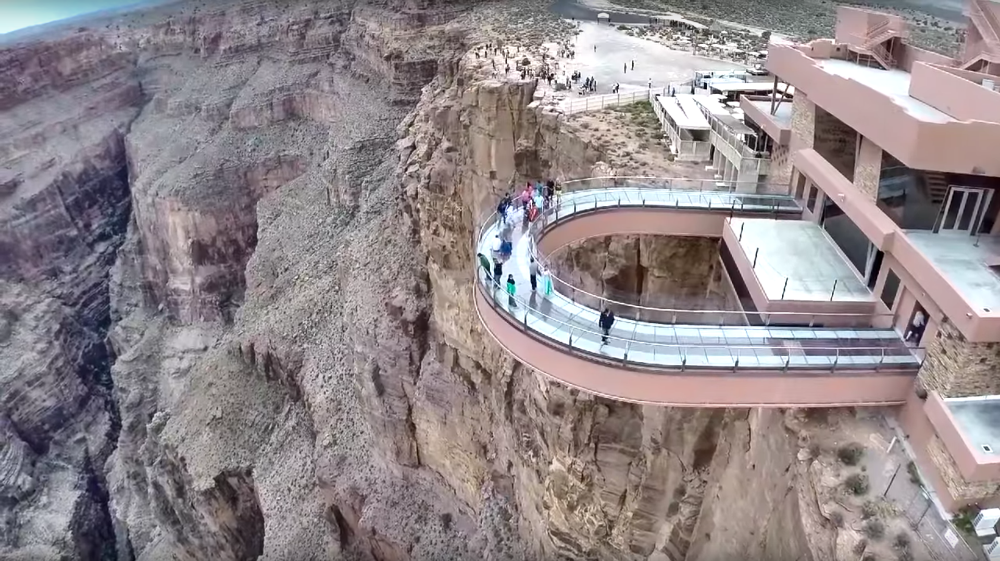
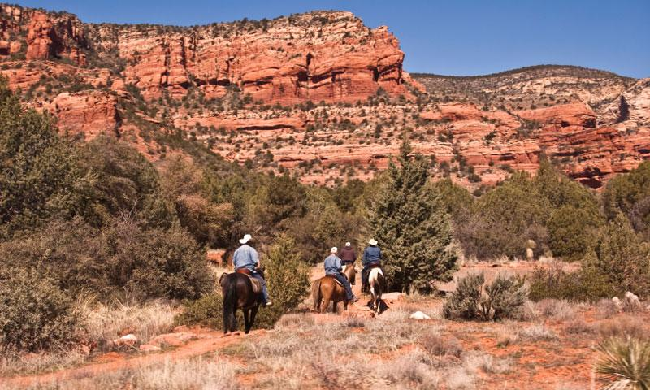

Yellowstone National Park
Photo Gallery


Mammoth Hot Springs has a number of actively forming Travertine terraces.
The drive to Lamar Valley requires some dangerous roads. But the result is amazing sunset views.
The multicolored layers get their hues from different species of bacteria living in the cooler water around the spring.
The buffalo were so common along the roads in Yellowstone that our mantra became "If it ain't lickin the car, we aren't stopping."
If you can handle the odor, the Yellowstone Sulphur Springs is a great place to hike.
Grand Canyon National Park
Photo Gallery
 



The Grand Canyon is a breathtaking natural wonder located in Arizona, USA, carved by the Colorado River over millions of years. Stretching over 277 miles long, up to 18 miles wide, and over a mile deep, this iconic landmark showcases intricate layers of rock that tell a complex geological history. Its monumental scale and intricate and colorful landscape offer some of the most overwhelming vistas in the world.
Visitors from around the globe flock to the Grand Canyon National Park to witness its grandeur. Whether they experience it by hiking its numerous trails, rafting in the Colorado River, or simply observing from one of the many overlooks, the Grand Canyon offers an unparalleled experience of awe and wonder. Its overwhelming size and intricate and colorful landscape offer a unique spectacle unsurpassed in its ability to illustrate the sheer power of natural forces.
The Grand Canyon Skywalk is a bridge with a glass walkway on the edge of a canyon.
You can go horseback riding in through the canyon as well!
Shanghai
Photo Gallery
Shanghai, often referred to as the "Pearl of the Orient," is a dynamic and vibrant metropolis in China. As one of the world's largest cities, Shanghai is a dazzling blend of tradition and modernity. With its iconic skyline featuring towering skyscrapers like the Shanghai Tower and the Oriental Pearl Tower, it's no wonder that Shanghai is often considered the financial and economic hub of Asia. Beyond its impressive architecture, the city boasts a rich cultural heritage, reflected in its historic neighborhoods such as the Bund and the French Concession. Here, you can stroll along tree-lined streets, explore colonial-era buildings, and savor a mix of international cuisines. Shanghai is also a global center for fashion, art, and entertainment, with a thriving arts scene, world-class museums, and a bustling nightlife. Visitors to Shanghai are sure to be captivated by its energy, diversity, and the seamless fusion of old and new.
Shanghai is not just a city of skyscrapers; it's a city of contrasts. The serene Yu Garden and its classical Chinese architecture offer a peaceful escape from the bustling streets, while the ultra-modern shopping districts like Nanjing Road cater to the desires of avid shoppers. The city's food scene is a culinary adventure in itself, with a vast array of local and international dishes available from street vendors to Michelin-starred restaurants. Additionally, Shanghai is a gateway to Chinese culture and history, as it hosts numerous festivals, art exhibitions, and performances that showcase China's heritage. Whether you're wandering through ancient temples, exploring the thriving contemporary art scene, or enjoying a traditional tea ceremony, Shanghai promises a multifaceted experience that captures the essence of China's past, present, and future.
There are 52 classical revival buildings with different styles standing on the Bund, known as the Bund World Architecture Exhibition Group. It is an important historical site and representative building in modern China, and one of the landmarks of Shanghai. In November 1996, the State Council of the People's Republic of China listed it as the fourth batch of national key cultural heritage protection units.